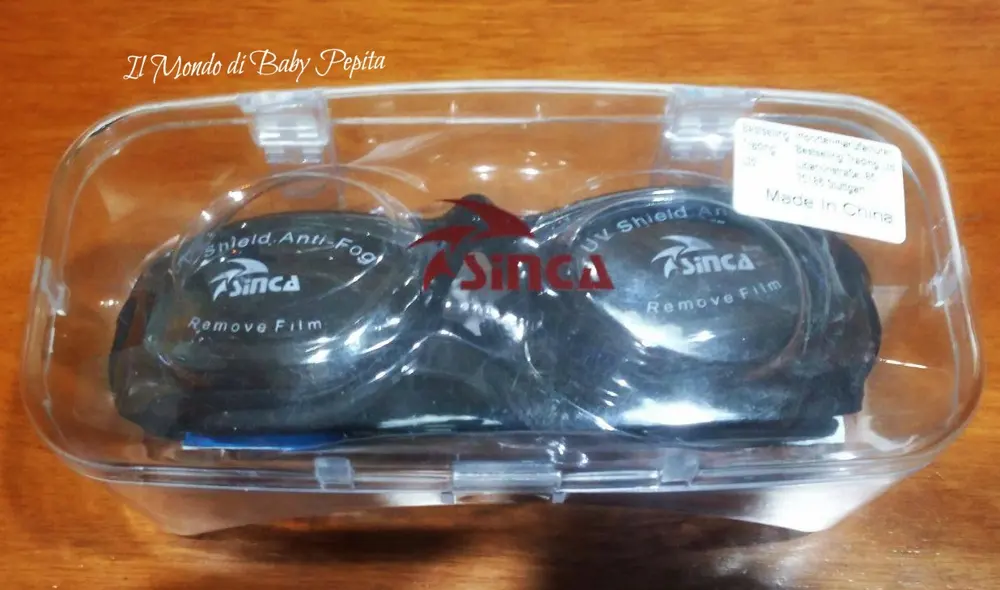
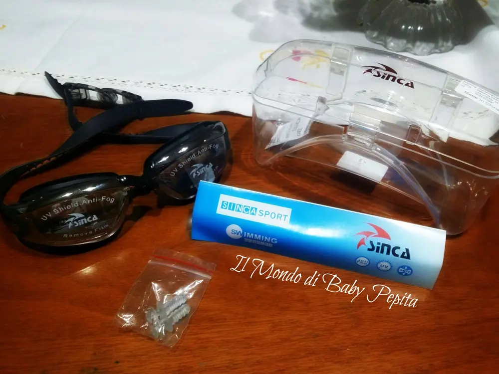
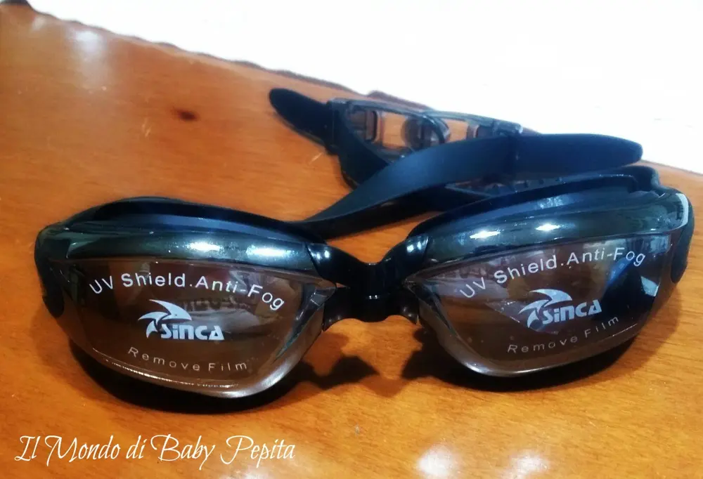

TopBrandBoxIt - Occhiali da Nuoto
E' arrivata la primavera e con essa anche il bel sole e le belle giornate e quindiiii . . voglia di andare al mareeeeee
Questa collaborazione di oggi è tutta estiva (o quasi) ovvero sono degli
OCCHIALI DA NUOTO. .
Vabbè che chi comunque è un nuotatore, uno sportivo e quindi fa immersioni ecc ecc, sicuramente gli occhialini da nuoto non sono solo indicate per l'estate ma tutto l'anno . .Ma so che qui siamo abbastanza pigri hahahah e quindi mare, piscina, barca, solo in questi casi le si usano :D

Arrivate sempre ben impacchettate (vi mostro quasi sempre per mostrarvi anche la serietà del venditore e di Amazon nel prendersi cura dei nostri pacchi)
Contenuto del pacchetto:
1 . Occhiali Anti-appannamento da nuoto per adulti 2 . tappi per orecchie1 . Manuale inglese 1 . Astuccio per occhiali
Il venditore in questione è TopBrandBoxIt che tra l'altro ho già collaborato con l'obiettivo per cellulare QUI

Marca: SincaColore: Nero Materiale: Policarbonato e SiliconePeso: 181 g

- Prospettiva a 180 gradi, con il materiale anti-appannante e resistente ai graffi aggiunto.
- 100% protezione UV, i tuoi occhi preziosi saranno protetti mentre si sta nuotando.
- Facile da regolare.
- Con rondella in silicone morbido e lente
- anti-appannante così da godersi l'esperienza sott'acqua.

Prezzo: 13,99 €